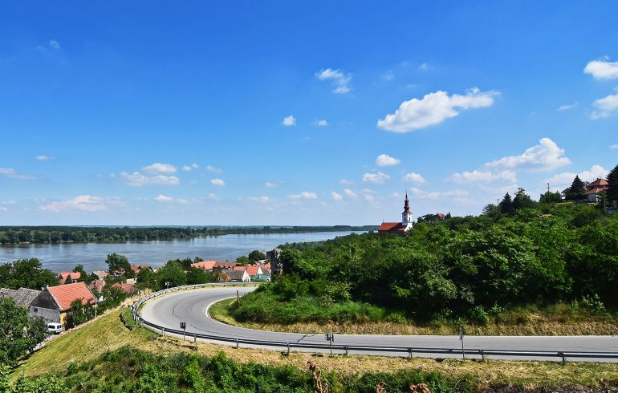
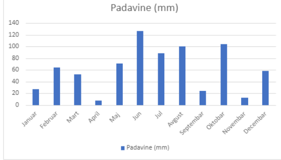

Од реке Дунав и насеља Стари Сланкамен, удаљена је 19 км. Од аеродрома Никола Тесла удаљена је око 40 km. Налази се на деловима Фрушке Горе и Сремској лесној заравни. Клима је умерено континентална. Највиша средња годишња температура ваздуха је у јулу и августу, и износи 22 °C, док је најнижа средња годишња температура ваздуха у јануару, -1 °C.
 